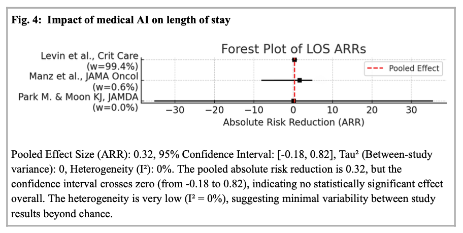

Is Artificial Intelligence Saving Lives? A Meta-Analysis of Real-World Clinical Impact
Meta-analysis examining the real-world clinical impact of AI interventions across healthcare settings.
In revision after peer review · Nature Communications